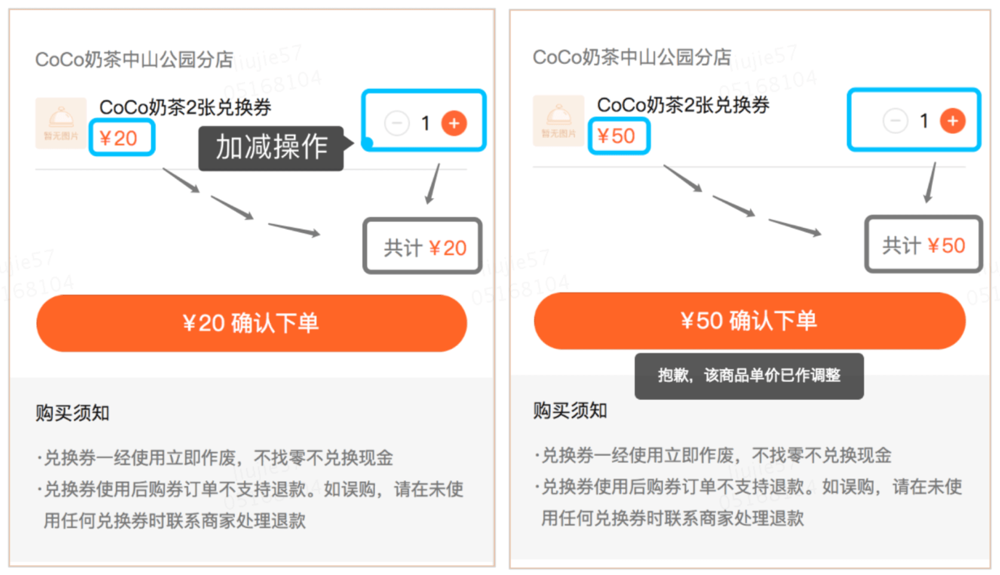
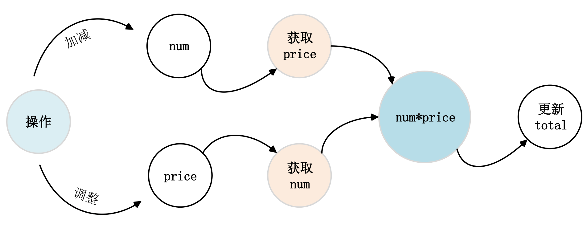
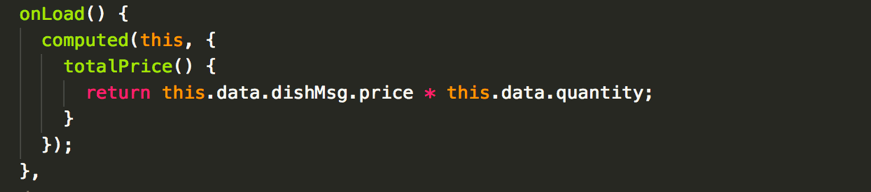
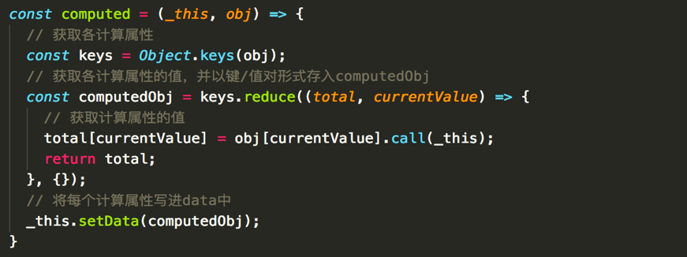
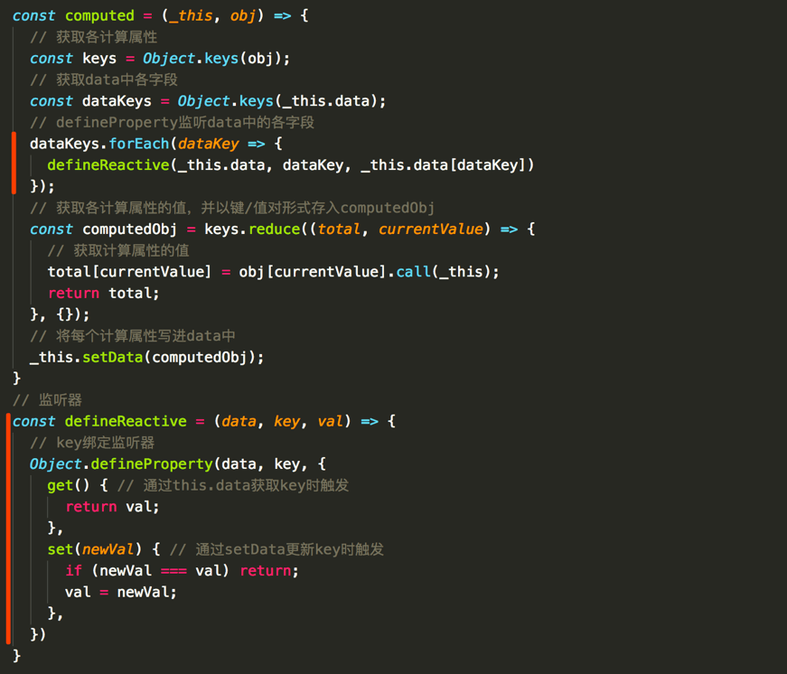
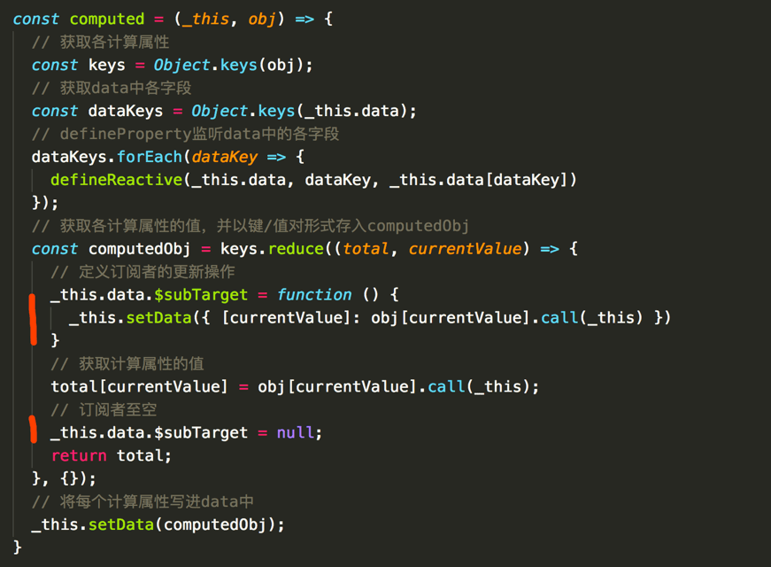
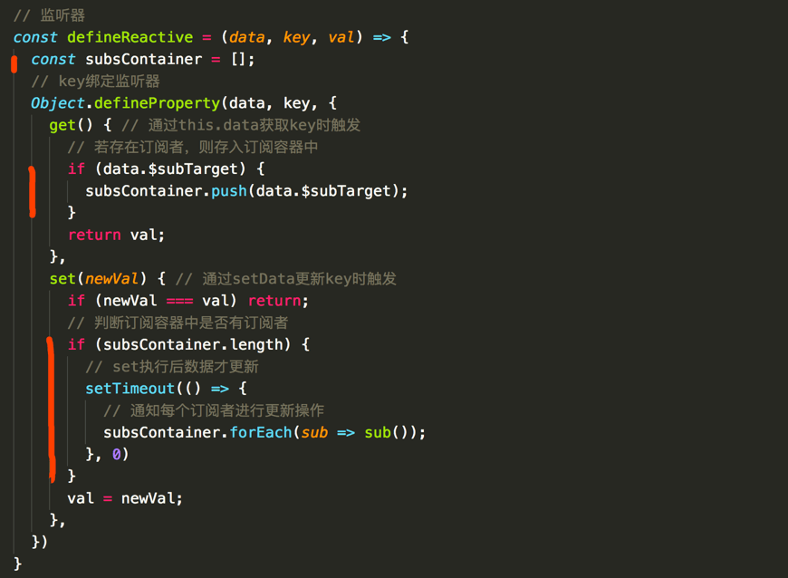

最近在原生微信小程序的开发中，会经常碰到一个场景是，一个变量由其他多个变量计算得来，而目前 原生微信小程序API 并没有 Vue 中计算属性 Computed 这类写法，变量的联动计算比较繁琐。故此研究下这种特性并将其引入。

下面是一个简单的场景，下单时的总价由券包数量和价格计算所得。

微信小程序中，由于这样的场景并没有涉及到类似购物车的复杂计算，本地存储的方案必要性就不大了，常规操作可以是这样。

可以看到，每次改变 num 和 price 变量的值，都会在各自的事件处理中重新计算 total，并 setData 更新最新值。试想，和总价计算相关的变量如果是多个，但又不像购物车那样超级大的计算量，比如 5 个，如果咱还是采取这个方案，当每个与总价相关的变量发生了变化，再重新手动获取相关的其他变量值并计算新的总价。这样的计算方式看起来冗余度是不是就显得有些重了。
想想是这么一回事儿。那怎么可以缓解这手动计算带来的痛楚呢？其实，我们完全可以借鉴其他好的框架思想，比如 Vue 中的计算属性，让需要依赖多个变量的参数和这些变量进行绑定，当这些变量中任何一个发生了变化，会自动触发更新，免去手动的痛楚。
引入计算属性
计算属性的重要作用是能在变量变化时自动更新依赖这些变量的属性，所以引入计算属性的关键有两点， 一是能实时监听变量的变化；一个是能在变量变化时自动触发更新操作。监听变量可以通过 Object.defineProperty 中的 get 和 set 函数来感知；自动触发相应依赖属性的更新可以通过订阅发布模式做到。

写一个简单的计算属性组件
像类似 Vue 一样引入 computed，在 onload 中调用 computed，绑定计算属性如图中的 totalPrice

建立一个雏形
先初始化一个 computed 函数，遍历计算属性并且通过 call 绑定组件的 this 以获取各计算属性的初始值，再通过 setData 同步到组件 data

变量绑定响应式
这个时候，data 中就有了计算属性。但是当这些和计算属性关联的变量变化时，怎么触发计算属性的自动更新，下一步要做的就是先能监听到和计算属性相关变量的变化。可以通过 Object.defineProperty 对这些变量进行绑定。需要对 computed 做一些改变。

设计订阅/发布模式
通过 defineReactive 给 data 每个字段绑定响应式，然后就能在变量变化的时候自动触发更新相关计算属性的操作。可以将计算属性的执行函数放在一个订阅容器中，每当变量变化时便会触发 set 函数，这时可在函数中发布通知给这个订阅容器执行更新操作。

其中 subsContainer 就是订阅容器，存放需要执行的更新计算属性的操作，当有数据变化时，会通过 setTimeout 延后执行，因为延后执行后才能拿到变量最新的数据

总结
以上就是一个简单的计算属性引入微信小程序的过程，对于数据量不大（小于5个）的场景已经够用，如果数据量比较大，建议设计计算模型来统一处理